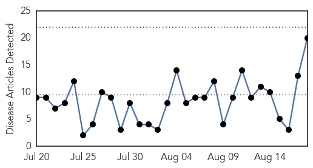
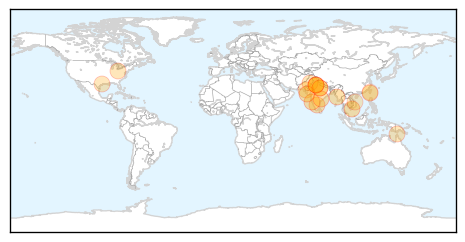

30 Day Trends
Web: 0 alerts, 0 warnings
Twitter: 3 alerts, 0 warnings
Top Articles:
- 0.993
- INFORMATION AND SERVICES IN GOA. Goa News, Goa Konkani News, Goa Sunaparant News, Goan Konakani News, Goa Video News, Goa Yellow Pages
- 0.988
- Dengue spreads its tentacles in Delhi, 158 fresh cases reported : Mail Today, News
- 0.987
- SGGP English Edition- Dengue fever in peak season
- 0.974
- Myanmar: Flood victims vulnerable to dengue fever
- 0.969
- UP: 15 Persons Tested Positive for Dengue in Kanpur Village
- 0.969
- UP: 15 persons tested positive for dengue in Kanpur village
- 0.967
- 15 persons tested positive for dengue in Bhanwar village
- 0.955
- Khammam in the grip of fevers
- 0.936
- Tainan Enterprises : Health authorities unveil rapid dengue tester
- 0.914
- BBMP Draws Maps To Tackle Dengue
- 0.882
- Second dengue death in Delhi; nearly 280 total cases
- 0.857
- 15 of Ghatampur village test positive for dengue
- 0.849
- Second dengue death in Delhi; nearly 280 total cases
- 0.834
- Anti-dengue campaign: Pull up your socks! Chief secretary tells government depts
- 0.822
- Depts asked to step up dengue control efforts
- 0.808
- Paper-based test can quickly diagnose Ebola in remote areas (video)
- 0.801
- Dangerous mozzie detected at Cairns Port
- 0.791
- Can America cope with a resurgence of tropical disease?
- 0.709
- Dengue fever claims two lives in Binh Duong
- 0.528
- Health authorities unveil rapid dengue tester
Top Tweets:
- 0.620
- Flavivirus news: Ebola dengue or yellow fever? $5 paper test can help in diagnosis in remote a... http://t.co/Q1v7IPpc48 pathogenposse
Web/News Articles
Tweets

Article Locations
Article Confidences